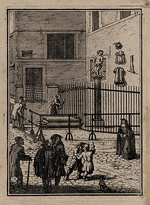
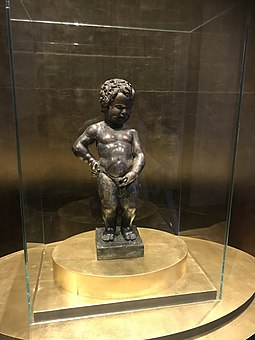
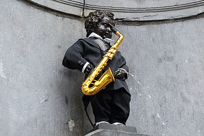

Histoire
La plus ancienne mention de l'existence de Manneken-Pis se trouve dans un texte administratif, qu'on peut dater de 1451-1452, sur les conduites d'eau alimentant les fontaines bruxelloises5. Erronément, certains ont fait remonter la statue à un texte de 1388 voire 1377 qui fait référence en réalité à la « fontaine du petit Julien » (Juliaenkensborre)6 en confondant à tort7 deux fontaines pourtant bien distinctes8. Cette confusion explique aussi pourquoi il arrive qu'on affuble Manneken-Pis du sobriquet de petit Julien9. Dès l'origine, la fontaine joue un rôle essentiel dans la distribution d’eau potable10. Elle se situe alors sur le parcours de la rue du Chêne, juste avant l'angle que forme celle-ci avec la rue de l'Étuve11. Elle prend place sur une colonne et déverse son eau dans un double bassin rectangulaire en pierre. Les seules représentations de cette première statuette se trouvent, de manière très schématique, dans un tableau de Denis Van Alsloot représentant l'ommegang bruxellois de 1615 et dans un dessin préparatoire à cette peinture12.
La première statue est remplacée par une nouvelle version en bronze commandée en 1619 à Jérôme Duquesnoy l'Ancien (1570-1641), grand sculpteur bruxellois de l'époque, père de Jérôme Duquesnoy le Jeune et de François Duquesnoy. Elle est vraisemblablement fondue et installée en 162013. Au même moment, la colonne servant de support à la statuette et le double bassin rectangulaire recueillant l'eau sont entièrement refaits par Daniel Raessens14.
Comme le montre cette gravure15de Jacques Harrewijn datant de 1697, la fontaine ne se situe désormais plus sur la voie publique, mais dans un renfoncement aménagé à l'angle des rues du Chêne et de l'Étuve.
En 1770, la colonne et le double bassin rectangulaire disparaissent ; la statuette est intégrée dans un nouveau décor en pierre de style rocaille provenant d'une autre fontaine bruxelloise démantelée16. L'eau s'écoule simplement au travers d'une grille au sol qui sera remplacée par une vasque au xixe siècle. Dans son nouvel écrin, Manneken-Pis donne l'impression d'être plus petit que dans son aménagement d'origine.
L'ensemble est protégé par une grille, dont la dernière version date de 185117. Celle-ci empêche dès ce moment l'accès à l'eau, reléguant la fontaine à un rôle décoratif et symbolique. C'est aussi le cas, vers la même époque, des autres fontaines bruxelloises dans la mesure où la Ville de Bruxelles rend possible dès 1855 la distribution d'eau potable à domicile18.
Au cours de son histoire, la statue de Jérôme Duquesnoy l'Ancien dut faire face à de nombreux aléas. Elle ne fut pas endommagée par le bombardement de Bruxelles de 1695 par l'armée française, mais, les canalisations ayant été touchées, elle ne put livrer son eau pendant un certain temps. Un pamphlet19 publié la même année raconte cet épisode. Ce texte est le plus ancien attestant que Manneken-Pis est devenu « un objet de gloire apprécié par tous et renommé dans le monde entier ». C’est la première fois aussi qu’il sert de symbole aux Bruxellois. Et il s’exprime déjà avec cet humour caractéristique, bon enfant et irrévérencieux, qui est si cher au cœur des habitants de Bruxelles. On raconte aussi traditionnellement qu'après le bombardement, on plaça au-dessus de sa tête une inscription tirée d'un passage de la Bible : « In petra exaltavit me, et nunc exaltavi caput meum super inimicos meos. » (le Seigneur m'a élevé sur un socle de pierre, et maintenant moi, j'élève ma tête au-dessus de mes ennemis)20.
Statue originale de 1619 conservée au Musée de la Ville de Bruxelles.
La statue fut, à plusieurs reprises, l'objet de vols ou de tentatives de vol. La légende voudrait que la statue ait été enlevée en 1745 et retrouvée à Grammont qui en aurait alors reçu une copie, mais rien n’est moins vrai. En réalité, la première tentative de rapt attestée fut entreprise en 1747 par un groupe de soldats français en garnison à Bruxelles. Pour calmer les esprits, le roi de France, Louis XV, offrit un habit de gentilhomme à Manneken-Pis, l'autorisant à porter l'épée, et le décora de la Croix de saint Louis. La statue fut volée en 1817 par le repris de justice Antoine Licas. Le coupable fut lourdement puni : condamné aux travaux forcés à perpétuité, il fut d'abord attaché pendant une heure à un carcan sur la Grand-Place. L'original ayant été brisé en 11 morceaux lors de son enlèvement en 1817, il fut restauré21 par un soudeur spécialisé sous la supervision du sculpteur Gilles-Lambert Godecharle22. La statue est alors vissée sur un nouveau socle marqué « 1620 – REST 1817 »23. Manneken-Pis connut d'autres péripéties au xxe siècle. Deux tentatives de vol se produisent en 1955 et 1957. Dérobé pendant une nuit glaciale du 16 au 17 janvier 1963 par des étudiants du club anversois "Les Vikings"24 avec un motif de bienfaisance pour les moins-valides. Le résultat était une somme de 80.000 BEF. Il fut aussitôt retrouvé et il n'y a pas eu de sanctions. Les choses furent plus graves lors de sa disparition en 1965 : la statuette avait été brisée par le voleur et il n'en subsistait que les pieds et les chevilles. Le corps fut néanmoins retrouvé en 196625. Au mois de juin, le magazine anversois De Post reçut un coup de téléphone anonyme, signalant que la statuette se trouvait dans le canal de Charleroi. Elle y fut retrouvée par des plongeurs envoyés par le magazine, et fut ramenée à Bruxelles le 27 juin26. Restaurée une nouvelle fois, la statue fut mise à l'abri et est désormais exposée au deuxième étage du Musée de la Ville de Bruxelles27 occupant la Maison du Roi28. Sur place, à l'angle des rues du Chêne et de l'Étuve, elle fut remplacée par une copie à l'identique. Cette copie fut de nouveau volée par des étudiants le 26 avril 1978. Cette fois-ci par des membres du club "Ad Fundum"29 d'Anderlecht (Chomé Wijns) comme cascade pour l'élection présidentielle[Laquelle ?][pas clair]. Ils reçurent comme punition la confection d'un nouveau costume. Chaque année la statue porte le costume à l'occasion du baptême des nouveaux étudiants et débite un tonneau de bière30[réf. nécessaire].
Jusqu'en 1926, la fontaine était alimentée par une source naturelle qui se trouvait dans le jardin de l'actuel n°5, rue Coppens31.

Symbolique
Les origines de la première statue de Manneken-Pis datant d’avant 1451 ne sont pas documentées. On sait toutefois que, dans la première moitié du xve siècle, plusieurs autres bambins urinant sculptés pour servir de fontaine ont vu le jour à Florence32. On trouve également un gamin qui pissait de l'eau rose, comme entremets mécanique au banquet du faisan organisé par le duc de Bourgogne à Lille en 1454. Le thème de l'enfant urinant, ailé ou non, remonte en réalité à l'Antiquité gréco-romaine. Il figurait alors Éros-Cupidon, le dieu de l'amour, en train de se soulager, symbolisant la fertilité et le débordement joyeux. Sa réapparition est attestée à Florence33 dès 1400, où la figure d'origine antique est assimilée à un petit esprit ou un lutin (spiritello) amusant et innocent32. Plus tard, on parlera en termes savants de putto pisciatore ou de puer mingens pour désigner l'iconographie de l'enfant urinant qui restera en vogue dans les arts (peinture, sculpture, gravure, fresque, papier peint) jusqu'au xviiie siècle. Aujourd’hui encore, on peut voir des fontaines de ce type en action à Rouen (fontaine Saint-Maclou), Lacaune (fontaine des pisseurs) et Copenhague (fontaine de la Charité). La diffusion du thème bénéficie particulièrement du Songe de Poliphile, livre illustré publié en 149934. Dans cet ouvrage, des bambins pisseurs apparaissent à plusieurs reprises, de même que des nymphes faisant jaillir l'eau de leur poitrine. La vogue de la figure de l’enfant urinant s’intègre effet plus largement dans le goût pour les fontaines anthropomorphes35. À Bruxelles même, on trouve mention d'une fontaine provisoire ayant l’aspect d’une sirène qui fait jaillir du vin de ses seins à l’occasion du mariage d’Antoine de Bourgogne célébré en 1409 au palais du Coudenberg36. Au xvie siècle, plusieurs fontaines sont aménagées à Bruxelles, qui figurent des divinités antiques féminines projetant de l'eau de leurs seins : deux sont publiques, situées devant la Maison du Roi[réf. nécessaire] et à l'arrière de l'église Saint-Nicolas, la troisième est privée (elle est exposée aujourd'hui au Musée de la Ville de Bruxelles27).
On peut émettre l'hypothèse que la première version de Manneken-Pis datant d'avant 1451 s’inscrit dans cette histoire ainsi que dans le goût médiéval pour les fontaines surprenantes. En tout cas, c'est indéniablement la figure du putto urinant que Jérôme Duquesnoy l'Ancien a traitée en exécutant la seconde version de Manneken-Pis en 1619-1620. Le ventre rebondi et la puissante musculature du petit personnage sont caractéristiques de cette iconographie.
Dès ses débuts, le caractère humoristique de Manneken-Pis a certainement dû plaire. Tout au long de son existence, d’autres traits lui ont également été associés, dans lesquels les Bruxellois ont aimé se retrouver. On voit en lui un gamin irrévérencieux, épris de liberté, capable de braver le qu’en-dira-t-on. Ceci explique vraisemblablement pourquoi Manneken-Pis a fini par devenir, au plus tard au cours du xviie siècle, le symbole des Bruxellois34.
Cette dimension symbolique ne s’est plus jamais démentie par la suite, faisant de Manneken-Pis « le plus ancien bourgeois de Bruxelles ». Pour le Bruxellois, se réclamer de cette statue gentiment provocante contribua à l’élaboration d’une représentation de soi comme d'un être espiègle, moqueur, libre et doté d’un grand sens de l’humour.

Folklore
Le jet d'eau est, à l'occasion de fêtes, remplacé par des breuvages. Ainsi, on rapporte qu'en 1890, au cours de grandes fêtes bruxelloises qui se déroulèrent durant deux jours, le petit bonhomme distribua du vin et du lambic (bière bruxelloise). Actuellement, certaines sociétés folkloriques bruxelloises ont gardé pour tradition lors de célébrations annuelles (Saint-Verhaegen…) d'offrir à boire en faisant couler de la bière par Manneken-Pis
{kind=link}